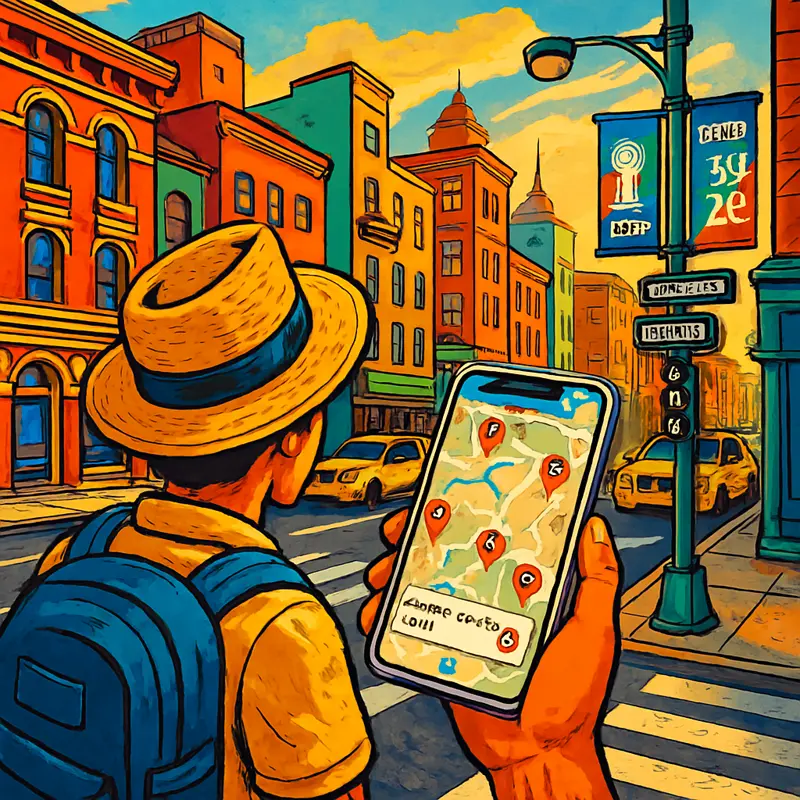
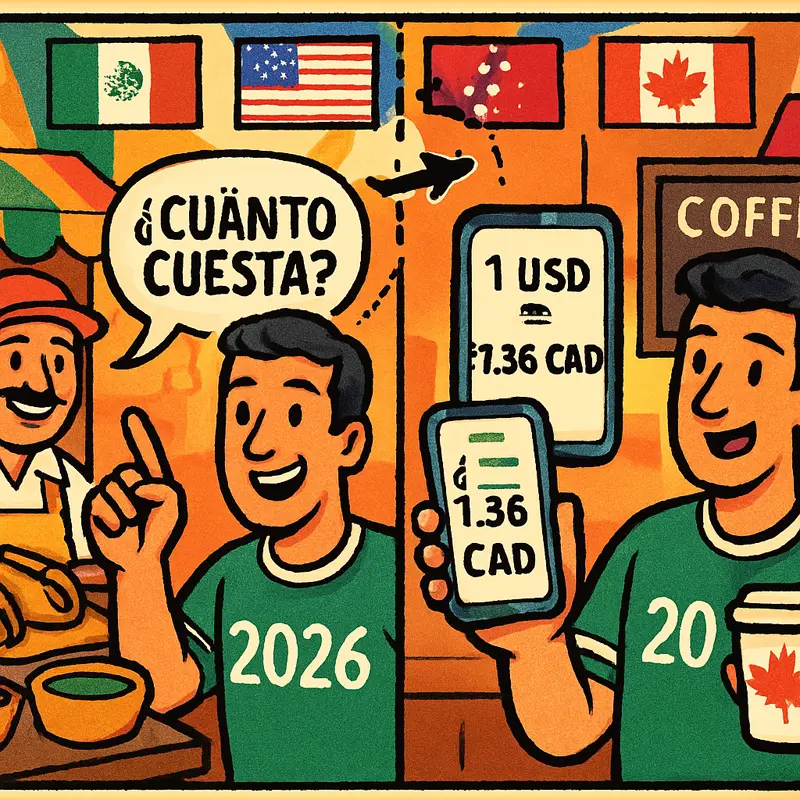

Ihr persönlicher Matchday-Führer für das Fußballturnier 2026.
WC26 Travel Companion hält alle 104 Spiele, 16 Stadien in 3 Ländern, GPS-Stadionkarten, Spieltag-Zeitpläne und wichtige Reisetools in Ihrer Tasche — komplett offline, ohne jegliche Datenerhebung.
App-Vorschau
Für jeden Schritt Ihres Spieltags gemacht
Von der Planung zu Hause bis zur Orientierung in einer fremden Stadt am Spieltag — sehen Sie, wie echte Fans die App nutzen.




Alles, was Sie brauchen — und nichts, was Sie nicht brauchen
Acht zweckgebaute Tools für den Spieltag — keine Social Feeds, keine Werbung, keine Konten.
🏟️ Kompletter Spielplan
Alle 104 Spiele — 72 Gruppenspiele und 32 K.-o.-Runden — mit echten Spielstätten, Daten und Anstoßzeiten in den USA, Mexiko und Kanada.
📋 Persönliche Spieltag-Zeitlinie
Fügen Sie Ihre Tickets mit Gate-, Block- und Sitzplatzinfos hinzu. Erhalten Sie eine Schritt-für-Schritt-Zeitlinie, die sagt, wann Sie losfahren, ankommen und ins Stadion gehen.
🔔 Intelligente Spiel-Erinnerungen
Automatische lokale Benachrichtigungen — 1 Tag und 2 Stunden vor Anstoß. Auf dem Gerät geplant, kein Server nötig.
📍 GPS-Stadionfinder
„In der Nähe“ nutzt das GPS Ihres Geräts und zeigt Ihre Live-Position neben allen 16 Stadien auf einer interaktiven MapKit-Karte mit Echtzeit-Entfernungen.
🚫 Leitfaden verbotener Gegenstände
Kategorisierte Liste verbotener und erlaubter Gegenstände an der Stadionsicherheitskontrolle — prüfen Sie beim Packen, nicht am Eingang.
🆘 Notfallkontakte
Polizei-, Krankenhaus- und Konsulatsnummern, geordnet nach allen 16 Gastgeberstädten in drei Ländern. Ein Tipp entfernt.
💱 Währung & Trinkgeld
Kurzreferenz für USD, CAD und MXN mit lokalen Trinkgeldgepflogenheiten — wichtig beim Grenzübertritt zwischen Gastgeberländern.
🗣️ Spieltag-Sätze
Wichtige spanische Sätze für Mexiko-Stadt, Guadalajara und Monterrey — Verkehr, Essen, Stadion und Notfälle mit Aussprache.
So funktioniert es
Fünf Schritte vom Download bis zum Spieltag.
Funktioniert komplett offline
Stadion-WLAN ist unzuverlässig. Internationales Roaming ist teuer. Deshalb funktioniert jede Funktion von WC26 Travel Companion ohne jegliche Internetverbindung. Spielpläne, Karten, Zeitlinien, Notfallkontakte, Währungsinformationen und Sätze sind alle in der App enthalten. Ihre Spieldaten werden lokal auf Ihrem Gerät mit Apples SwiftData-Framework gespeichert. Kein Konto. Keine Werbung. Kein Tracking. Keine Daten verlassen Ihr Handy.
FAQ
Braucht die App eine Internetverbindung?
Nein. Alle Spielpläne, Stadiondaten, Karten und Tools funktionieren vollständig offline. Standortfunktionen nutzen ausschließlich das GPS des Geräts.
Sammelt die App persönliche Daten?
Nein. Null Datenerhebung. Siehe unsere Datenschutzrichtlinie.
Was ist mit Standortdaten?
Der Standort wird nur auf dem Gerät verarbeitet, um Ihre Position auf der Karte zu zeigen. Er wird nie aufgezeichnet oder irgendwohin übertragen.
Sind die Spielzeiten in meiner lokalen Zeitzone?
Ja. Alle Anstoßzeiten werden als absolute UTC-Zeitstempel gespeichert und automatisch in der aktuellen Zeitzone Ihres Geräts angezeigt.
Kann ich Benachrichtigungen ausschalten?
Ja. Sie können die Benachrichtigungsberechtigung beim ersten Dialog verweigern oder später in iOS-Einstellungen → WC26 Travel Companion → Mitteilungen deaktivieren.
Welche iOS-Version wird benötigt?
iOS 17.0 oder höher. Die App ist mit SwiftUI, SwiftData, MapKit, CoreLocation und UserNotifications gebaut — alles native Apple-Frameworks.
Wie erreiche ich den Support?
Schreiben Sie an wangning.engineer@outlook.com. Übliche Antwortzeit: 24–48 Stunden.
App holen
WC26 Travel Companion ist im App Store für iPhone und iPad erhältlich.